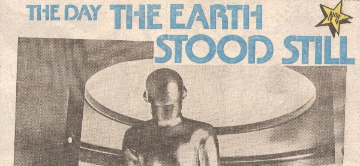

Does what it says on the tin, from the perspective of 1980.
| Title | Parts | Pages | w indicates a wraparound coverCovers | Year(s) | Issues | Writer | Artist | Colourist | Letterer |
|---|---|---|---|---|---|---|---|---|---|
| No.1 Metropolis | 1 | 1 | 0 | 1980 | 152 | editorial | promo photo | [b&w] | n/a |
| No.2 Things to Come | 1 | 1 | 0 | 1980 | 153 | editorial | promo photo | [b&w] | n/a |
| No.3 The Thing! | 1 | 1 | 0 | 1980 | 154 | editorial | promo photo | [b&w] | n/a |
| No.4 The Day the Earth Stood Still | 1 | 1 | 0 | 1980 | 155 | editorial | promo photo | [b&w] | n/a |
| No.5 When Worlds Collide | 1 | 1 | 0 | 1980 | 156 | editorial | promo photo | [b&w] | n/a |
| No.6 Them! | 1 | 1 | 0 | 1980 | 157 | editorial | promo photo | [b&w] | n/a |
| No.7 Invasion of the Body Snatchers | 1 | 1 | 0 | 1980 | 158 | editorial | promo photo | [b&w] | n/a |
| No.8 2001: A Space Odyssey | 1 | 1 | 0 | 1980 | 159 | editorial | promo photo | [b&w] | n/a |
| No.9 Dark Star | 1 | 1 | 0 | 1980 | 160 | editorial | promo photo | [b&w] | n/a |
| No.10 Star Wars | 1 | 1 | 0 | 1980 | 161 | editorial | promo photo | [b&w] | n/a |
| year | episodes | pages |
| 1977 | 0 | 0 |
| 1978 | 0 | 0 |
| 1979 | 0 | 0 |
| 1980 | 10 | 10 |
| 1981 | 0 | 0 |
| 1982 | 0 | 0 |
| 1983 | 0 | 0 |
| 1984 | 0 | 0 |
| 1985 | 0 | 0 |
| 1986 | 0 | 0 |
| 1987 | 0 | 0 |
| 1988 | 0 | 0 |
| 1989 | 0 | 0 |
| 1990 | 0 | 0 |
| 1991 | 0 | 0 |
| 1992 | 0 | 0 |
| 1993 | 0 | 0 |
| 1994 | 0 | 0 |
| 1995 | 0 | 0 |
| 1996 | 0 | 0 |
| 1997 | 0 | 0 |